A legal relation often binds more than two parties at once. An arbitral tribunal binds its arbitrators for the duration of a case, and a citation block, the set of earlier decisions cited together in one passage of a judgment, binds those decisions to one another. Such relations are hyperedges, and a collection of them observed over time is a temporal hypergraph. Each hyperedge of a temporal hypergraph carries a time: an interval, during which the hyperedge is active, or an instant, at which it occurs. Coupette, Hartung and Katz (2024) model two legal systems in this way and compare what the hypergraph and the graph built from the same data show about them. This document reproduces their analyses on the released data and extends them with hypergraph modularity. The methods are the construction of temporal hypergraphs and their snapshots, descriptive measures of growth, a null-model test of repeated collaboration, hyperedge centrality, motifs, and communities.
Data
The data were released by Coupette, Hartung and Katz (2024) under a
CC BY-NC 4.0 licence (Zenodo record 8081507) and ship with the package.
icsid_tribunals is a data frame with one row per seat on a
tribunal of the International Centre for Settlement of Investment
Disputes (ICSID). Each case has three seats. A row records the case, the
seat, the arbitrator, the dates on which the tribunal was constituted
and the case concluded, and attributes of the case such as its economic
sector. A case still pending at the end of observation has no conclusion
date.
head(icsid_tribunals)
#> case seat arbitrator registered constituted
#> 1 ARB/74/1 arbitrator_1 Jacques Michel GROSSEN 1974-03-06 1974-10-07
#> 2 ARB/74/1 arbitrator_2 Dominique PONCET 1974-03-06 1974-10-07
#> 3 ARB/74/1 president Pierre CAVIN 1974-03-06 1974-10-07
#> 4 ARB/74/2 arbitrator_1 Michael KERR 1974-06-21 1974-12-16
#> 5 ARB/74/2 arbitrator_2 Fuad ROUHANI 1974-06-21 1974-12-16
#> 6 ARB/74/2 president Jørgen TROLLE 1974-06-21 1974-12-16
#> concluded is_concluded economic_sector subject
#> 1 1977-08-29 TRUE Other Industry Production of fibers and textiles
#> 2 1977-08-29 TRUE Other Industry Production of fibers and textiles
#> 3 1977-08-29 TRUE Other Industry Production of fibers and textiles
#> 4 1977-02-27 TRUE Oil, Gas & Mining Bauxite mining
#> 5 1977-02-27 TRUE Oil, Gas & Mining Bauxite mining
#> 6 1977-02-27 TRUE Oil, Gas & Mining Bauxite mining
#> respondent
#> 1 Côte d'Ivoire
#> 2 Côte d'Ivoire
#> 3 Côte d'Ivoire
#> 4 Jamaica
#> 5 Jamaica
#> 6 JamaicaThe data contain 742 cases heard by 441 arbitrators, of which 243 were pending on 15 June 2023, the end of observation.
The decisions of the German Federal Constitutional Court (GFCC) are
held in two data frames. gfcc_decisions has one row per
decision with its date, and gfcc_citations has one row per
citation, with the citing decision, the cited decision, the citation
block, and the dates of the two decisions.
head(gfcc_citations)
#> citing cited block date_citing date_cited
#> 1 001-001 001-014 001-001:000 1951-09-09 1951-10-23
#> 2 001-005 001-004 001-005:000 1951-09-27 1951-09-27
#> 3 001-066 001-014 001-066:000 1951-10-02 1951-10-23
#> 4 001-074 001-322 001-074:000 1951-11-13 1952-05-28
#> 5 001-085 001-117 001-085:000 1951-11-27 1952-02-20
#> 6 001-202 001-184 001-202:000 1952-03-20 1952-03-20The court issued 3,618 decisions between 1951 and 2022, which contain 77,284 citations in 46,257 blocks.
Temporal hypergraphs
A temporal hypergraph is built from membership data, one row per node and hyperedge, with a column of times. Two formats of time are distinguished. In the interval format, a hyperedge has a start and an end and is active on the interval between them, which describes a tribunal that sits from its constitution to the conclusion of its case. In the contact format, a hyperedge has a single time and is an instantaneous event, which describes a citation block that appears on the date of the citing decision. Dates are converted to days since the first time in the data, and that origin is reported with the object.
The tribunals are built in the interval format. The argument
node names the column of the arbitrators,
hyperedge the column of the cases, and start
and end the columns of the dates. A case without a
conclusion date is active until observation_end. Columns
that are constant within a case, such as the economic sector, are kept
as attributes of the hyperedge.
tribunals <- temporal_hypergraph(icsid_tribunals, node = "arbitrator",
hyperedge = "case", start = "constituted",
end = "concluded",
observation_end = as.Date("2023-06-15"))
summary(tribunals)
#> n_nodes n_hyperedges n_event_times first_time last_time n_memberships
#> 1 441 742 1076 0 17782 2226
#> mean_edge_size median_edge_size mean_duration format time_unit
#> 1 3 3 1303.436 interval daysEvery tribunal has three arbitrators, so every hyperedge has size three, and a tribunal sits for 1,303 days on average.
The citation blocks are built in the contact format, with the cited
decision as the node, the block as the hyperedge and the date of the
citing decision as time. The data frame of decisions is
passed as nodes, so that a decision is a node from its own
date whether or not it is ever cited. The citing decision is constant
within a block and becomes an attribute of the hyperedge. With
sparse = TRUE the incidence matrix is stored as a sparse
matrix.
blocks <- temporal_hypergraph(gfcc_citations, node = "cited",
hyperedge = "block", time = "date_citing",
nodes = gfcc_decisions, sparse = TRUE)
summary(blocks)
#> n_nodes n_hyperedges n_event_times first_time last_time n_memberships
#> 1 3618 46257 2026 0 25762 77284
#> mean_edge_size median_edge_size mean_duration format time_unit
#> 1 1.670753 1 NA contact daysThe median block cites 1 decision and the mean block 1.67. These two summaries are Table 1 of Coupette, Hartung and Katz (2024).
Snapshots and representations
A snapshot is the static hypergraph of the hyperedges present at a
time. With mode = "active", a snapshot holds the intervals
that contain the time; with mode = "cumulative", it holds
every hyperedge begun by that time. A cumulative snapshot at the end of
observation is the static aggregate of the data. With
multiedges = FALSE, hyperedges with the same members are
merged into one.
tribunals_all <- hg_snapshot(tribunals, mode = "cumulative")
tribunals_active <- hg_snapshot(tribunals, at = as.Date("2023-06-15"),
mode = "active", multiedges = FALSE)
blocks_all <- hg_snapshot(blocks, mode = "cumulative")The same data can be represented in four ways. The multi-hypergraph
(mh) keeps every hyperedge, the binary hypergraph
(bh) keeps each distinct set of members once, and the
corresponding graphs keep (mg) or merge (bg)
repeated edges. For the tribunals, the graph is the clique expansion, in
which two arbitrators are joined when they sat on a tribunal together.
The degree of a node is its number of neighbours in a graph and its
number of hyperedges in a hypergraph.
hg_representations(tribunals_all)
#> representation type n_nodes n_edges mean_degree median_degree
#> 1 bg graph 441 1869 8.476190 4
#> 2 mg graph 441 2226 10.095238 4
#> 3 bh hypergraph 441 722 4.911565 2
#> 4 mh hypergraph 441 742 5.047619 2An arbitrator has a median of 4 colleagues and sits on a median of 2 tribunals. The 742 tribunals hold 722 distinct sets of arbitrators, so 20 tribunals repeat a set that sat before.
For the citation blocks, the graph is the citation graph, in which
the citing decision is joined to each decision of the block. The
argument graph = "citation" selects it, and
edge_source names the attribute that holds the citing
decision.
hg_representations(blocks_all, graph = "citation", edge_source = "citing")
#> representation type n_nodes n_edges mean_degree median_degree
#> 1 bg graph 3618 39428 10.89773 15
#> 2 mg graph 3618 77279 21.35959 22
#> 3 bh hypergraph 3618 13539 10.15285 6
#> 4 mh hypergraph 3618 46257 21.35959 10
#> median_out_degree median_in_degree
#> 1 6 7
#> 2 9 10
#> 3 NA NA
#> 4 NA NAA decision has a median of 6 outgoing citations in the binary citation graph and belongs to a median of 10 blocks in the multi-hypergraph. The 46,257 blocks hold 13,539 distinct sets of decisions, so a set of decisions occurs in 3.4 blocks on average. These counts are Table 2 of Coupette, Hartung and Katz (2024).
One decision as a hypergraph
The citations of a single decision form a hypergraph of its own, in
which each block is a hyperedge over the decisions it cites. With
where, the blocks whose citing attribute is
decision 153-001, the decision of 14 January 2020 on the headscarf ban
(Kopftuch III), are kept.
headscarf <- hg_subset(blocks_all, where = c(citing = "153-001"))
headscarf
#> Hypergraph: 85 nodes, 68 hyperedges (sizes 1: 28, 2: 16, 3: 9, 4: 7, 5: 2, 6: 3, 7: 1, 8: 1, 12: 1)
#> Source: group membership (node = cited, hyperedge = block)
#> hyperedge size members
#> 153-001:000 2 012-180, 078-214
#> 153-001:001 4 081-138, 099-129, 119-309, 139-148
#> 153-001:002 6 081-138, 107-299, 110-077, 117-244, 146-294, 149-293
#> 153-001:003 5 034-165, 041-029, 049-024, 081-138, 149-293
#> 153-001:004 6 024-236, 032-098, 044-037, 083-341, 108-282, 125-039
#> 153-001:005 4 012-001, 024-236, 105-279, 123-148
#> 153-001:006 2 024-236, 093-001
#> 153-001:007 2 108-282, 138-296
#> 153-001:008 1 108-282
#> 153-001:009 1 138-296
#> ... 58 more rowsThe decision cites 85 decisions in 68 blocks, and 28 of the blocks cite a single decision. The figure plots each block of two or more decisions as a hull around its members, coloured by its size, which is Figure 3 of Coupette, Hartung and Katz (2024).
plot(headscarf, color_by = "size", labels = FALSE,
legend_title = "block size")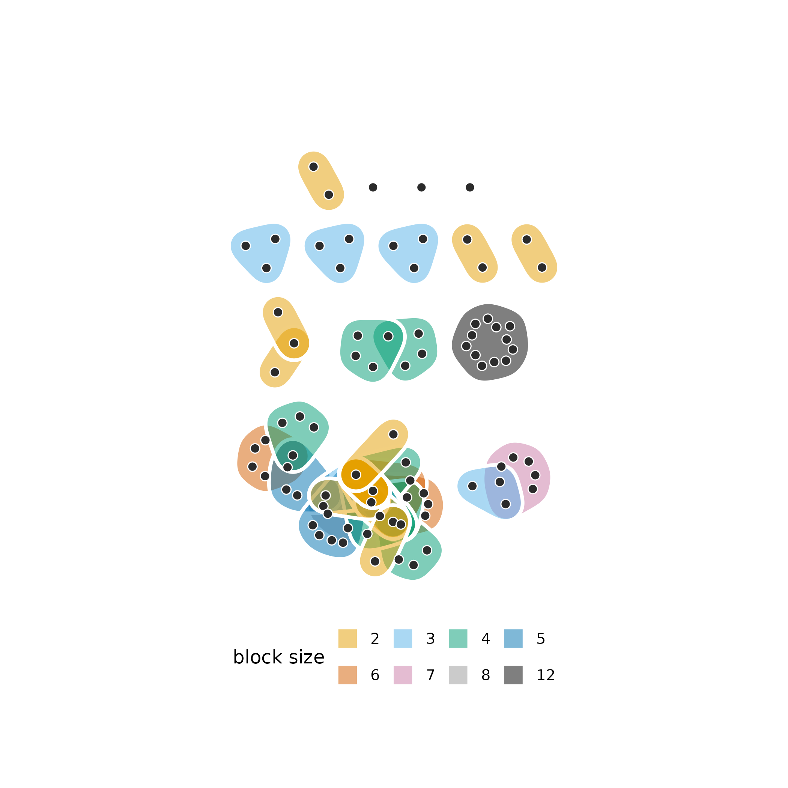
The blocks form 14 connected components. The largest joins 37 of the cited decisions through 46 overlapping blocks, which share decisions that the judgment cites in several passages. The other blocks lie apart, and a decision cited in a block of its own is a point outside every hull.
Growth
The growth of a temporal hypergraph is the number of its nodes,
hyperedges and memberships at each time. With
mode = "cumulative", each count includes everything that
has appeared up to that time.
blocks_growth <- hg_growth(blocks, mode = "cumulative")
tail(blocks_growth, 3)
#> time n_nodes n_edges n_edges_distinct n_memberships
#> 2024 25722 3615 46167 13505 77029
#> 2025 25748 3616 46173 13506 77051
#> 2026 25762 3618 46257 13539 77284The figure plots the four counts against the date, Figure 4a of Coupette, Hartung and Katz (2024).
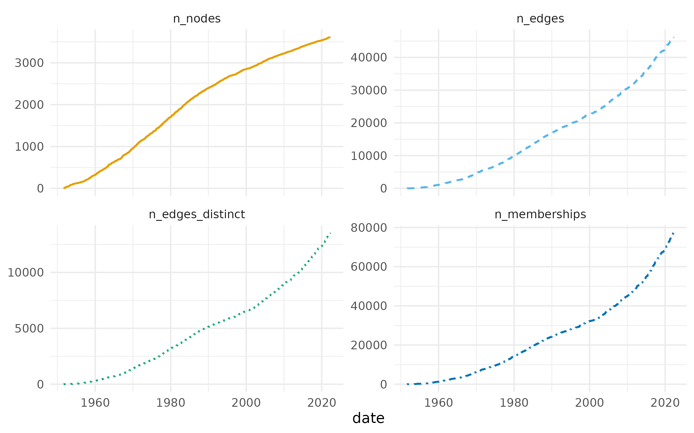
The number of decisions grows close to linearly over the seven decades, and the numbers of blocks and memberships grow faster than linearly. At the end of observation the 46,257 blocks hold 13,539 distinct sets of decisions, 29% of their number.
The size of a block is the number of decisions it cites. The
distribution of block sizes is computed for the cumulative hypergraph at
five dates given in at.
census_dates <- as.Date(c("1960-12-31", "1975-12-31", "1990-12-31",
"2005-12-31", "2020-12-31"))
block_sizes <- hg_edges(blocks, what = "distribution", measure = "size",
at = census_dates, snapshot_mode = "cumulative")The figure plots the complementary cumulative distribution of block size at each date, Figure 4b of Coupette, Hartung and Katz (2024).
plot(block_sizes)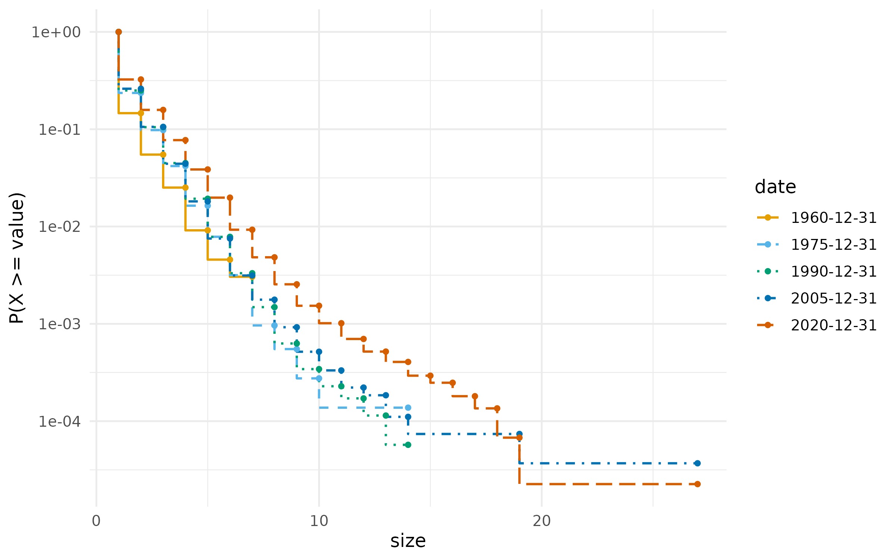
The curves move to the right over time. The largest block cited 7 decisions by the end of 1960 and 27 by the end of 2020, and the mean size rose from 1.24 to 1.64.
Arbitrators and tribunals over time
The hyperdegree of an arbitrator is the number of tribunals on which the arbitrator sat.
hg_get(tribunals_all, what = "nodes", sort_by = "degree", top = 5)
#> node degree
#> 1 Brigitte STERN 94
#> 2 Stanimir A. ALEXANDROV 50
#> 3 Gabrielle KAUFMANN-KOHLER 43
#> 4 Zachary DOUGLAS 40
#> 5 Bernard HANOTIAU 37
tribunal_counts <- hg_measures(tribunals_all, what = "distribution",
measure = "hyperdegree")The figure plots the complementary cumulative distribution of the hyperdegree, Figure 5a of Coupette, Hartung and Katz (2024).
plot(tribunal_counts)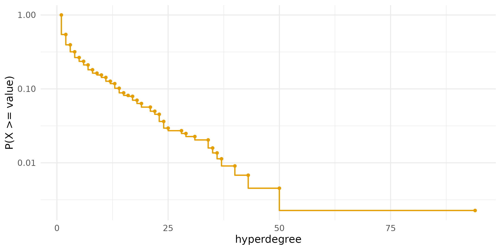
The distribution is heavy-tailed. Of the arbitrators, 61% sat on one or two tribunals, and Brigitte STERN sat on 94, almost twice as many as the next arbitrator, Stanimir A. ALEXANDROV, with 50.
For a hypergraph in the interval format, growth counts the active
hyperedges at each time, and the columns ending in
_cumulative count every hyperedge begun by that time. With
components = TRUE, the number of connected components of
the active hypergraph, the share of its nodes in the largest component
and the diameter of that component are added.
tribunals_growth <- hg_growth(tribunals, components = TRUE)
tail(tribunals_growth, 3)
#> time n_nodes n_edges n_edges_distinct n_memberships n_nodes_cumulative
#> 1074 17760 212 210 208 630 441
#> 1075 17777 212 209 207 627 441
#> 1076 17782 210 208 206 624 441
#> n_edges_cumulative n_edges_distinct_cumulative n_components
#> 1074 742 722 4
#> 1075 742 722 4
#> 1076 742 722 4
#> largest_component diameter
#> 1074 0.9575472 7
#> 1075 0.9575472 7
#> 1076 0.9571429 7The figure plots the active and cumulative counts of arbitrators and tribunals, Figure 5b of Coupette, Hartung and Katz (2024).
plot(tribunals_growth,
columns = c("n_nodes", "n_edges", "n_nodes_cumulative",
"n_edges_cumulative"),
facets = FALSE)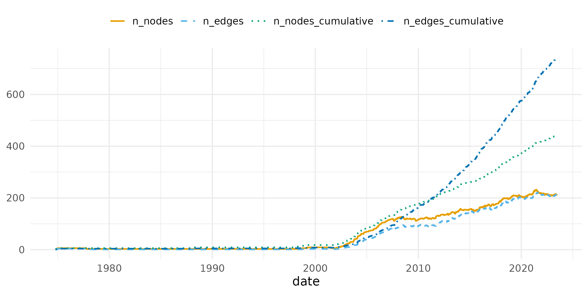
At the end of observation, 208 of the 742 tribunals were active, with 210 of the 441 arbitrators. The active counts stay close to zero until 2002 and rise steeply after it. Since 2007 the largest component has held between 91% and 100% of the active arbitrators, and its diameter has stayed between 6 and 9.
The neighbourhood of a tribunal is the set of arbitrators who share a
tribunal with one of its members. Its size is computed for every active
tribunal at every time, and what = "summary" returns its
mean and quartiles.
neighbourhood <- hg_edges(tribunals, what = "summary", measure = "n_neighbors")The figure plots these summaries over time, Figure 5c of Coupette, Hartung and Katz (2024).
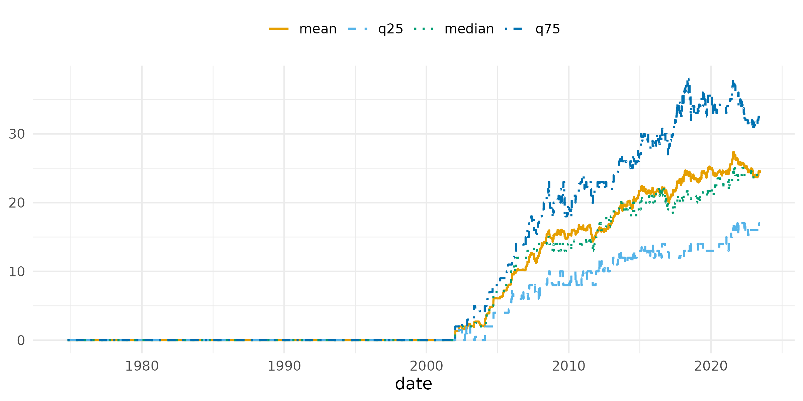
The mean and the median stay close together, so the size of a neighbourhood has a symmetric distribution, unlike the hyperdegree of an arbitrator. At the end of observation the median tribunal had 24 arbitrators in its neighbourhood.
Repeated collaboration
A repeated collaboration is a pair or a set of three arbitrators who
sit together on more than one tribunal. The statistic
repeated_pairs is the number of pairs counted with their
multiplicity minus the number of distinct pairs, and
repeated_edges is the number of tribunals whose set of
arbitrators sat before. A null model tells whether these counts exceed
what the number of tribunals of each arbitrator implies. In the null
model of Coupette, Hartung and Katz (2024), selected with
method = "assignment", the arbitrators are taken in
decreasing order of hyperdegree, and each arbitrator is assigned to as
many tribunals as the arbitrator sat on, chosen at random among the
tribunals with a free seat. The model keeps the hyperdegree of every
arbitrator and the size of every tribunal. Its draws are not uniform
over the hypergraphs with these margins, and the test compares the
observed count with 999 draws.
repeats <- hg_null_test(tribunals_all,
statistic = c("repeated_pairs", "repeated_edges"),
method = "assignment", n = 999, seed = 1)
repeats
#> statistic observed null_mean null_lo null_hi z p_value n
#> 1 repeated_pairs 357 299.438438 275 323 4.666061 0.001 999
#> 2 repeated_edges 20 2.612613 0 6 11.149553 0.001 999
#> method
#> 1 assignment
#> 2 assignmentThe tribunals contain 357 repeated pairs, against a null range of 275 to 323, and 20 repeated sets of three, against a null range of 0 to 6. Both counts lie above every null draw. Arbitrators who sat together once sit together again more often than their numbers of tribunals explain.
Hyperedge centrality
The s-line graph of a hypergraph has one vertex per hyperedge, and two vertices are adjacent when their hyperedges share at least s nodes. The s-betweenness of a hyperedge is its betweenness centrality in the s-line graph, the share of shortest paths between other hyperedges that pass through it, and its s-closeness is the inverse of its mean distance to the other hyperedges. With s = 1, two tribunals are adjacent when they share an arbitrator. The centralities are computed on the tribunals active at the end of observation, with the normalisation of NetworkX that Coupette, Hartung and Katz (2024) use.
central_cases <- hg_edge_centrality(tribunals_active, s = 1,
measure = "betweenness", top = 10)
central_cases
#> edge s measure value
#> 1 ARB/17/21 1 betweenness 0.02654013
#> 2 ARB/19/27 1 betweenness 0.02499207
#> 3 ARB/18/23 1 betweenness 0.02262065
#> 4 ARB/16/20 1 betweenness 0.02213551
#> 5 ARB/20/19 1 betweenness 0.02206388
#> 6 ARB/18/43 1 betweenness 0.02137011
#> 7 ARB/21/5 1 betweenness 0.02136420
#> 8 ARB/20/53 1 betweenness 0.01910242
#> 9 ARB/20/13 1 betweenness 0.01904040
#> 10 ARB/16/39 1 betweenness 0.01796559
hg_edge_centrality(tribunals_active, s = 1, measure = "closeness", top = 10)
#> edge s measure value
#> 1 ARB/18/23 1 closeness 0.4865949
#> 2 ARB/17/21 1 closeness 0.4772147
#> 3 ARB/20/19 1 closeness 0.4760676
#> 4 ARB/21/52 1 closeness 0.4715336
#> 5 ARB/16/39 1 closeness 0.4681894
#> 6 ARB/21/5 1 closeness 0.4616413
#> 7 ARB/22/20 1 closeness 0.4616413
#> 8 ARB/18/32 1 closeness 0.4605677
#> 9 ARB/19/27 1 closeness 0.4573767
#> 10 ADHOC/17/1 1 closeness 0.45527386 of the ten tribunals with the highest betweenness are also among
the ten with the highest closeness. With edges, the ten
tribunals with the highest betweenness are kept, and the figure plots
them coloured by economic sector, Figure 6a of Coupette, Hartung and
Katz (2024).
central_tribunals <- hg_subset(tribunals_active, edges = central_cases)
plot(central_tribunals, color_by = "economic_sector",
legend_title = "economic sector", label_size = 2.8)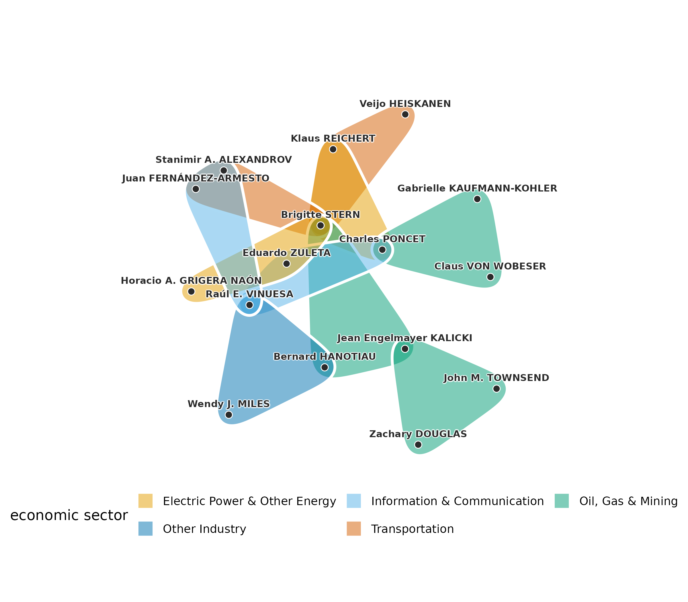
The central tribunals are joined through a few arbitrators who sit on several of them. Brigitte STERN sits on 5 of the ten, and the tribunals span 5 economic sectors.
Motifs
A motif is a small pattern of hyperedges over a fixed number of nodes. In a hypergraph whose hyperedges all have three nodes, four nodes can hold up to four hyperedges, one for each set of three. The motif Y has two of the four hyperedges, T has three and O has all four. A motif count is compared with its distribution under a configuration model that keeps the hyperdegree of every node and the size of every hyperedge, sampled by repeated exchanges of members between pairs of hyperedges (Lotito et al. 2023). The census is computed on the aggregate of all tribunals, with 300 draws from the null model.
motifs <- hg_motifs(tribunals_all, n = 300, seed = 1)
motifs
#> motif count expected null_sd z p_value delta
#> 1 Y 478 291.6066667 20.3490857 9.159789 0.003322259 0.2409407
#> 2 T 7 0.7033333 0.8095197 7.778274 0.003322259 0.5380234
#> 3 O 0 0.0000000 0.0000000 NA 1.000000000 0.0000000
#> normalized_delta n_null method
#> 1 0.4087138 300 configuration_mcmc
#> 2 0.9126626 300 configuration_mcmc
#> 3 0.0000000 300 configuration_mcmcThe figure plots the null distribution of the count of Y with the observed count, Figure 7c of Coupette, Hartung and Katz (2024).
plot(motifs)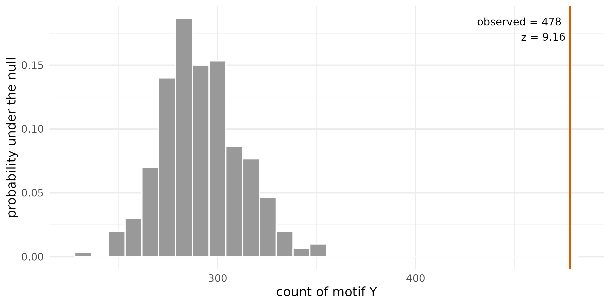
The tribunals contain 478 motifs Y against a null mean of 292 (z = 9.2) and 7 motifs T against a null mean of 0.7. The motif O does not occur. Two tribunals that share two arbitrators form a Y, so the excess of Y is the repeated collaboration of pairs seen in the null-model test.
Communities of arbitrators
A community is a set of nodes that share more hyperedges with each other than with the rest of the hypergraph. Hypergraph modularity measures the quality of a partition of the nodes into communities (Kamiński et al. 2019). Let hyperedge e have size and weight , and let . For a partition, let be the largest number of nodes of e in one community. The hyperedge is owned by that community when and contributes to it. The linear weighting, , is the default (Kamiński, Prałat and Théberge 2020). The expected owned weight of a community A under a null model that keeps the weighted degree of every node and the size of every hyperedge is its degree tax,
where is the total weight of the hyperedges of size d and is the share of the weighted degree held by A. The modularity of the partition is
A partition with a single community has . Iteratively reweighted modularity maximisation (IRMM) finds a partition of high modularity (Kumar et al. 2020). It maximises graph modularity on a weighted clique expansion of the hypergraph with the Louvain method (Blondel et al. 2008), raises the weight of the hyperedges that the partition keeps whole relative to those it splits, and repeats until the weights settle. The Louvain step is randomised, so IRMM is run from 20 seeds, and the partition reported is the medoid, the run with the largest summed adjusted mutual information with the other runs (Vinh, Epps and Bailey 2010). Modularity cannot resolve communities below a size set by the total weight (Fortunato and Barthélemy 2007), and runs from different seeds reach different partitions of similar modularity, so the agreement between runs is part of the result.
irmm <- hg_communities(tribunals_all, type = "irmm", seeds = 1:20,
n_runs = 20, max_iter = 300)
irmm
#> Hypergraph IRMM communities: 441 nodes, 15 communities (the medoid of 20 runs, run 10, seed 10)
#> node community
#> Abdulqawi Ahmed YUSUF 1
#> Achille NGWANZA 2
#> Adolfo JIMÉNEZ 3
#> Ahmed Sadek EL-KOSHERI 4
#> Aimery DE SCHOUTHEETE 5
#> Aktham EL KHOLY 2
#> Alain PELLET 6
#> Alain VIANDIER 7
#> Albert Jan VAN DEN BERG 6
#> Alejandro ESCOBAR 2
#> ... 431 more rowsThe medoid has 15 communities of between 3 and 79 arbitrators. All 20 runs converged, with between 13 and 17 communities, and two runs agree with a median adjusted mutual information of 0.55. The modularity of the medoid is computed for the hypergraph.
irmm_modularity <- hg_modularity(tribunals_all, irmm)
irmm_modularity
#> type modularity edge_contribution degree_tax n_communities n_edges
#> 1 linear 0.3491433 0.6042228 0.2550796 15 742
#> total_weight
#> 1 742The medoid owns a weighted share of 0.60 of the tribunals against a degree tax of 0.26, for a modularity of 0.349. The runs reach modularities between 0.341 and 0.370. The contribution of each community shows where the score comes from.
hg_modularity(tribunals_all, irmm, what = "communities")
#> community n_nodes volume edge_contribution degree_tax modularity
#> 1 3 79 426 0.125786164 6.623957e-02 0.059546596
#> 2 5 64 374 0.103773585 5.171481e-02 0.052058773
#> 3 6 57 448 0.119946092 7.285756e-02 0.047088533
#> 4 1 51 229 0.062893082 2.007782e-02 0.042815261
#> 5 2 42 177 0.046720575 1.214247e-02 0.034578101
#> 6 4 40 226 0.053459119 1.956910e-02 0.033890018
#> 7 9 28 88 0.025606469 3.063900e-03 0.022542569
#> 8 8 30 121 0.027852650 5.748883e-03 0.022103768
#> 9 7 25 94 0.022012579 3.491142e-03 0.018521437
#> 10 10 7 15 0.004492363 9.050998e-05 0.004401853
#> 11 13 3 9 0.004043127 3.262765e-05 0.004010499
#> 12 14 6 10 0.003593890 4.027199e-05 0.003553618
#> 13 11 3 3 0.001347709 3.630191e-06 0.001344079
#> 14 12 3 3 0.001347709 3.630191e-06 0.001344079
#> 15 15 3 3 0.001347709 3.630191e-06 0.001344079The largest communities contribute most of the score. The 4 communities of three arbitrators are the small components of the hypergraph, tribunals whose arbitrators never sat with anyone else.
The figure plots the ten central tribunals of the previous section with each arbitrator coloured and shaped by its IRMM community.
plot(central_tribunals, node_groups = irmm, label_size = 2.8)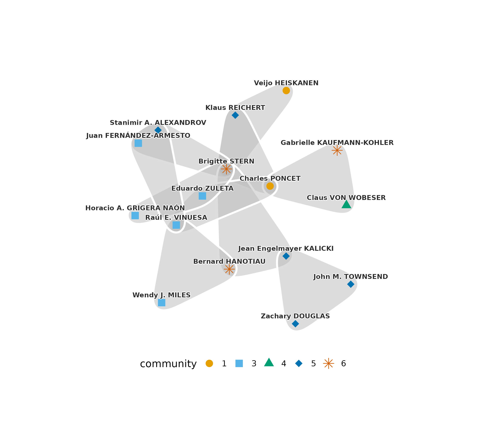
The 16 arbitrators of the central tribunals belong to 5 communities, and 9 of the ten tribunals join arbitrators of more than one community. A tribunal that is central in the line graph connects parts of the hypergraph that modularity separates.
Infomap partitions a graph by minimising the description length of a
random walk on it (Rosvall and Bergstrom 2008). The default method of
hg_communities() runs Infomap on the association graph of
the hypergraph, in which a hyperedge of size d adds
to the weight of each pair of its members, following Coupette, Hartung
and Katz (2024).
infomap <- hg_communities(tribunals_all, seeds = 1:20, n_runs = 20)
hg_modularity(tribunals_all, infomap)
#> type modularity edge_contribution degree_tax n_communities n_edges
#> 1 linear 0.1274398 0.8948787 0.7674389 59 742
#> total_weight
#> 1 742The Infomap medoid has 59 communities, and its largest holds 217 arbitrators. It owns more of the tribunals than the IRMM medoid, with an edge contribution of 0.89, and pays a larger degree tax, 0.77, for a modularity of 0.127. Two Infomap runs agree with a median adjusted mutual information of 0.98. The two partitions are compared directly.
hg_agreement(irmm, infomap, method = c("ari", "ami"))
#> n agreement aligned ari ami
#> 1 441 0.09977324 239 0.05325693 0.3334312The adjusted Rand index between the two medoids is 0.05 and the adjusted mutual information 0.33. Infomap keeps 217 arbitrators of the densely connected core in one community, because a random walk remains in the core for long periods, and IRMM divides the arbitrators among communities of at most 79. The two objectives give different partitions of the same tribunals.
Communities of decisions across representations
Coupette, Hartung and Katz (2024) partition the GFCC decisions in
eight representations and compare the partitions. Four are citation
graphs, binary (bg) or with multiplicities
(mg), directed or undirected (bgu,
mgu). Four are association graphs of the hypergraph, binary
(bh) or with multiplicities (mh), with
(bhs, mhs) or without self-association, the
term that joins the citing decision to the decisions of its block. The
partitions use the backward citations, those whose citing decision is
later than the cited one.
backward_citations <- subset(gfcc_citations, date_citing > date_cited)
backward <- temporal_hypergraph(backward_citations, node = "cited",
hyperedge = "block", time = "date_citing",
nodes = gfcc_decisions, sparse = TRUE)
backward_all <- hg_snapshot(backward, mode = "cumulative")Each representation is partitioned by Infomap from five seeds with
five trials each. The original analysis uses 50 seeds with 100 trials.
The citation graphs are selected with method = "citation",
the binary representations with
duplicate_edges = "collapse", and self-association with
self_association = TRUE.
communities_bg <- hg_communities(backward_all, n_runs = 5, trials = 5,
seeds = 1:5, method = "citation",
edge_source = "citing",
duplicate_edges = "collapse", directed = TRUE)
communities_bgu <- hg_communities(backward_all, n_runs = 5, trials = 5,
seeds = 1:5, method = "citation",
edge_source = "citing",
duplicate_edges = "collapse")
communities_mg <- hg_communities(backward_all, n_runs = 5, trials = 5,
seeds = 1:5, method = "citation",
edge_source = "citing", directed = TRUE)
communities_mgu <- hg_communities(backward_all, n_runs = 5, trials = 5,
seeds = 1:5, method = "citation",
edge_source = "citing")
communities_bh <- hg_communities(backward_all, n_runs = 5, trials = 5,
seeds = 1:5, duplicate_edges = "collapse")
communities_bhs <- hg_communities(backward_all, n_runs = 5, trials = 5,
seeds = 1:5, duplicate_edges = "collapse",
self_association = TRUE,
edge_source = "citing")
communities_mh <- hg_communities(backward_all, n_runs = 5, trials = 5,
seeds = 1:5)
communities_mhs <- hg_communities(backward_all, n_runs = 5, trials = 5,
seeds = 1:5, self_association = TRUE,
edge_source = "citing")The eight partitions are set side by side. With hg, each
medoid is also scored on the graph it was computed on.
comparison <- hg_compare_communities(
bg = communities_bg, bgu = communities_bgu, mg = communities_mg,
mgu = communities_mgu, bh = communities_bh, bhs = communities_bhs,
mh = communities_mh, mhs = communities_mhs,
hg = backward_all, edge_source = "citing"
)
comparison
#> Community comparison across 8 representations: bg, bgu, mg, mgu, bh, bhs, mh, mhs
#> model medoid_seed n_runs n_communities n_singletons n_nontrivial largest_size
#> bg 1 5 362 221 141 284
#> bgu 1 5 330 216 114 363
#> mg 2 5 416 229 187 96
#> mgu 5 5 404 216 188 132
#> bh 2 5 874 664 210 120
#> bhs 5 5 421 216 205 101
#> mh 4 5 902 664 238 63
#> mhs 2 5 450 216 234 102
#> second_size balance
#> 135 0.4753521
#> 190 0.5234160
#> 94 0.9791667
#> 92 0.6969697
#> 91 0.7583333
#> 89 0.8811881
#> 62 0.9841270
#> 87 0.8529412The association graphs without self-association leave 664
(bh) and 664 (mh) decisions as singletons, the
decisions that no later decision cites. With self-association a citing
decision is joined to the decisions it cites, and the number of
singletons falls to 216 (bhs), close to the 221 of the
binary citation graph. The figure plots the distribution of community
sizes in the eight partitions, Figure 8b of Coupette, Hartung and Katz
(2024).
plot(comparison)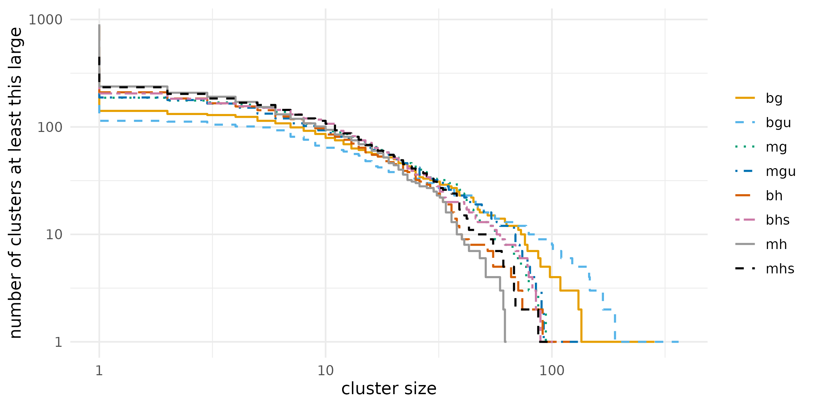
The curves are close between sizes of about 3 and 30 and differ at
both ends. The partitions without self-association have the most
singletons, and the binary citation graphs have the largest communities,
of 284 (bg) and 363 (bgu) decisions, against
63 for mh. The similarity between two partitions is
measured by the adjusted mutual information and the adjusted Rand
index.
plot(comparison, what = "similarity")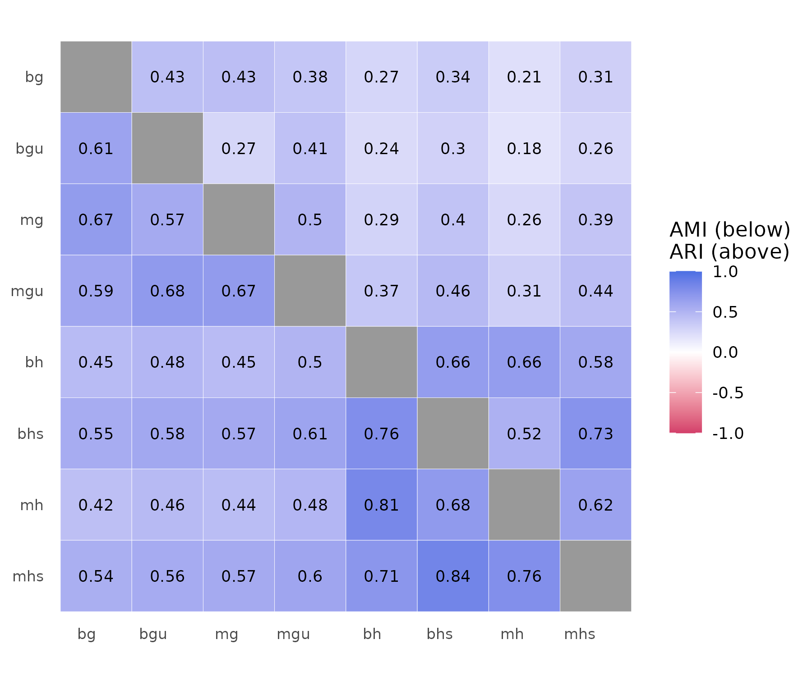
The figure shows the adjusted mutual information below the diagonal and the adjusted Rand index above it, Figure 8c of Coupette, Hartung and Katz (2024). Partitions of two hypergraph representations agree with a mean adjusted mutual information of 0.76, and a partition of a hypergraph representation agrees with a partition of a citation graph with a mean of 0.52. The quality of each medoid is measured on its own graph by coverage, performance, modularity and the largest conductance of a community.
hg_get(comparison, what = "quality")
#> model coverage weighted_coverage performance modularity conductance
#> 1 bg 0.3889722 0.3889722 0.9805861 0.3523059 1.0000000
#> 2 bgu 0.4713374 0.4713374 0.9725865 0.4197613 0.8881988
#> 3 mg 0.3087170 0.4933214 0.9882521 0.4716520 1.0000000
#> 4 mgu 0.3582378 0.5497558 0.9874580 0.5251639 0.8372881
#> 5 bh 0.4344190 0.5914135 0.9924775 0.5680416 0.7711864
#> 6 bhs 0.3167942 0.5720922 0.9879647 0.5521826 0.8374632
#> 7 mh 0.3769212 0.6147573 0.9937396 0.5950959 0.8333333
#> 8 mhs 0.2904028 0.6090068 0.9887366 0.5882855 0.8590284
#> n_communities
#> 1 362
#> 2 330
#> 3 416
#> 4 404
#> 5 874
#> 6 421
#> 7 902
#> 8 450The medoids of the hypergraph representations reach a graph modularity between 0.55 and 0.60 on their own graphs, and those of the citation graphs between 0.35 and 0.53. Each score is computed on a different graph, so the comparison describes how clearly each representation divides into communities and does not rank the partitions on a common scale.
Interpretation
The hypergraph and the graph built from the same data describe the nodes differently. An arbitrator sits on a median of 2 tribunals but has a median of 4 colleagues, and repeated sets of colleagues, which the graph merges, exceed a null model that keeps every arbitrator’s number of tribunals. The excess of the motif Y is the same repetition seen in groups of four arbitrators. The central tribunals and the communities answer different questions. The central tribunals sit between communities, and the partitions of the core of the hypergraph depend on the objective, modularity or description length. For the court, the partitions of the four hypergraph representations resemble each other more than they resemble the partitions of the citation graphs.
Limitations
The data end on 15 June 2023, and the tribunals pending on that date are treated as active until then, so the active snapshot at the end of observation includes cases of unknown length. The null model of the repeated-collaboration test draws hypergraphs with the correct margins but not uniformly among them. The motif census uses 300 draws and the GFCC partitions five seeds with five trials, against 1,000 draws and 50 seeds with 100 trials in the original analysis, so the tails of the null distributions and the medoids are estimated with less precision. Hypergraph modularity counts a hyperedge for a community only when a majority of its nodes belong to that community, so for tribunals of three arbitrators a tribunal split two to one counts as owned. Both community methods are randomised, and a single run is not a finding.
References
Blondel, V. D., Guillaume, J.-L., Lambiotte, R., & Lefebvre, E. (2008). Fast unfolding of communities in large networks. Journal of Statistical Mechanics: Theory and Experiment, 2008(10), P10008. https://doi.org/10.1088/1742-5468/2008/10/P10008
Coupette, C., Hartung, D., & Katz, D. M. (2024). Legal hypergraphs. Philosophical Transactions of the Royal Society A, 382(2270), 20230141. https://doi.org/10.1098/rsta.2023.0141
Fortunato, S., & Barthélemy, M. (2007). Resolution limit in community detection. Proceedings of the National Academy of Sciences, 104(1), 36–41. https://doi.org/10.1073/pnas.0605965104
Kamiński, B., Poulin, V., Prałat, P., Szufel, P., & Théberge, F. (2019). Clustering via hypergraph modularity. PLOS ONE, 14(11), e0224307. https://doi.org/10.1371/journal.pone.0224307
Kamiński, B., Prałat, P., & Théberge, F. (2020). Community detection algorithm using hypergraph modularity. In Complex Networks & Their Applications IX, Studies in Computational Intelligence 943, 152–163. https://doi.org/10.1007/978-3-030-65347-7_13
Kumar, T., Vaidyanathan, S., Ananthapadmanabhan, H., Parthasarathy, S., & Ravindran, B. (2020). Hypergraph clustering by iteratively reweighted modularity maximization. Applied Network Science, 5, 52. https://doi.org/10.1007/s41109-020-00300-3
Lotito, Q. F., Contisciani, M., De Bacco, C., Di Gaetano, L., Gallo, L., Montresor, A., Musciotto, F., Ruggeri, N., & Battiston, F. (2023). Hypergraphx: a library for higher-order network analysis. Journal of Complex Networks, 11(3), cnad019.
Rosvall, M., & Bergstrom, C. T. (2008). Maps of random walks on complex networks reveal community structure. Proceedings of the National Academy of Sciences, 105(4), 1118–1123. https://doi.org/10.1073/pnas.0706851105
Vinh, N. X., Epps, J., & Bailey, J. (2010). Information theoretic measures for clusterings comparison: Variants, properties, normalization and correction for chance. Journal of Machine Learning Research, 11, 2837–2854.